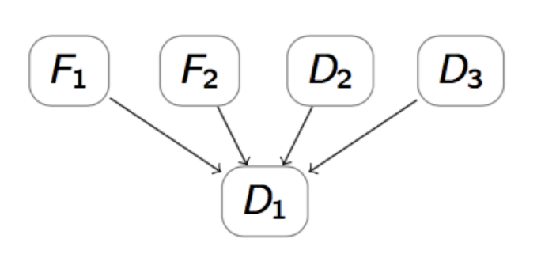
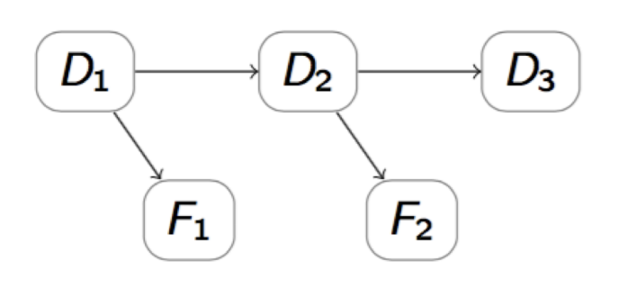
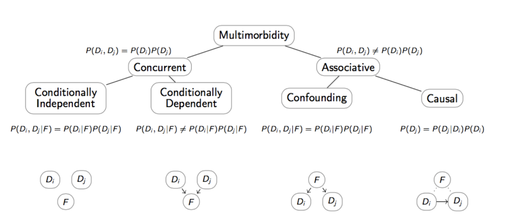
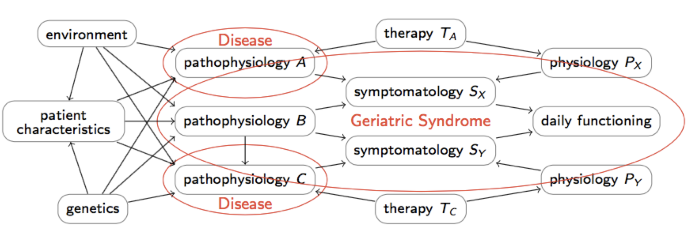

Lesson 10 - Temporal modeling#
Multimorbilidade#
O desafio está em lidar com as doenças e a sua interação:
Muitas doenças distintas e classes de doenças
Interações incertas entre doenças
Diferenças de prevalência incertas entre regiões, sociais e sexo
Lappenschaar et al (2013)
Multimorbilidade - Modelo Causal#
ERRADO, modelo diagnóstico:  CERTO, modelo causal: 
O modelo diagnóstico representado por uma análise de regressão de D1 assume que todas as variáveis restantes são independentes entre si e certas, em oposição ao modelo causal em que todas os verdadeiras (e possíveis) dependências são modeladas
Os modelos gráficos probabilísticos, tais como as redes Bayesianas, permitem um modelo explícito através de um grafo (descoberto por aprendizagem da estrutura)
Peter Lucas (2014)
Tipos de Multimorbilidade#
Doenças incondicionalmente independentes: ou seja, doenças distintas que co-ocorrem simultaneamente.
( P(D_i, D_j) = P(D_i) P(D_j) )
Sem sinais ou sintomas comuns
Com sinais ou sintomas comuns
Doenças dependentes, condicionalmente independentes: têm uma causa comum.
( P(D_i, D_j | F) = P(D_i | F) P(D_j | F) )
Regressão logística: ( \beta_{ij} = 0 )
Aprendizagem estrutural: ( D_i \leftarrow F \rightarrow D_j )
Doenças dependentes, com dependência direta.
( P(D_i, D_j) \neq P(D_i) P(D_j) )
Regressão logística: ( \beta_{ij} \neq 0 )
Aprendizagem estrutural: ( F \rightarrow D_i \rightarrow D_j )

Modelação Bayesiana na multimorbilidade#
Na regressão logística, doenças são frequentemente utilizadas como…
variável de resultado num modelo (A)
variável explicativa noutro modelo (B)
⇒ múltiplos modelos
Uso de termos de interação:
(\beta_{ij} = 0 \rightarrow) Independência Verdadeira ou Confusão?
(\beta_{ij} \neq 0 \rightarrow) Dependência Condicional ou Causalidade?
Nas Redes Bayesianas, todas as variáveis são tratadas como incertas:
um modelo, com (possível) representação de processos subjacentes
interações automaticamente incorporadas
permite distinguir entre várias formas de multimorbilidade
Na regressão logística, as variáveis podem ser usadas de diferentes formas em diferentes modelos, criando a necessidade de múltiplos modelos para capturar todas as relações. Termos de interação ((\beta_{ij})) são utilizados para verificar se existe independência verdadeira ((\beta_{ij} = 0)) ou dependência condicional ((\beta_{ij} \neq 0)) entre variáveis.
As Redes Bayesianas oferecem uma abordagem unificada onde todas as variáveis são tratadas como incertas. Isso permite a representação de processos subjacentes e a incorporação automática de interações entre variáveis. Esta abordagem facilita a distinção entre várias formas de multimorbilidade, oferecendo uma visão mais integrada e compreensiva das relações entre as variáveis em estudo.


Interações Temporais#
Uma vez que neste tipo de problemas:
Há co-existência temporariamente dependente de fatores de risco
Os doentes são suscetíveis a expressar múltiplas comorbilidades
E a desenvolver novas doenças…
precisamos de novos desenhos de estudo com componentes analíticos temporais.
Mas a representação de eventos temporais, e a sua interpolação, depende em grande medida da abstração temporal escolhida para a modelação.
Probabilidades de Transição#
Probabilidade de ocorrer de um estado de saúde para outro (state-transition model)
Probabilidade de experienciar um evento (discrete-event simulations)
As probabilidades (de transição) são o motor de um modelo de decisão. Muitas vezes são derivados da literatura.
Tipos de inputs tipicamente encontrados na literatura: probabilidades (risco), taxas (mortalidade), risco relativo, odds ratio, hazard ratio…
Mas nós precisamos de dados sobre a forma de probabilidades para poder utilizá-las no modelo!!!
É necessário transformar as probabilidades disponíveis na literatura de forma a que se enquadrem na janela temporal adequada para o nosso modelo.
As taxas podem ser manipuladas matematicamente (somadas, divididas, etc) -> as probabilidades não!! Daí que o que se faz é o seguinte: Probabilidade -> Taxa -> Probabilidade.
Nota: isto assume que o evento ocorre a uma taxa constante num dado período de tempo.
Probabilidade -> Taxa:
Taxa = - ln(1 - p) / t
Taxa -> Probabilidade:
Probabilidade = 1 - exp(-r*t)
p = probabilidade; t = tempo; r = taxa
RR -> Probabilidade:
Aqui é preciso ter cuidado porque se o RR é resultado de uma regressão, este terá sido ajustado para os covariantes, enquanto que a odds ratio não ajustada…
Probabilidade expostos = RR x probabilidade dos não expostos.
OR -> Probabilidade:
É mais comum encontrar OR do que RR na literatura.
Se o outcome for raro (<10%), então pode assumir-se o OR como uma aproximação do RR.
Dados de Sobrevivência e Probabilidades#
Todos as probabilidades prévias assumiram-se constantes ao longo do tempo.
No entanto NÃO se deve assumir isto.
Assim, fará sentido ter várias probabilidades para o evento no modelo - uma para cada período de tempo de interesse.
Curva de Kaplan-Meier
Não ajustado -> utilizar com dados de RCT.
Curva de Modelo de Riscos Proporcionais de Cox
Ajustado -> utilizar com dados observacionais.